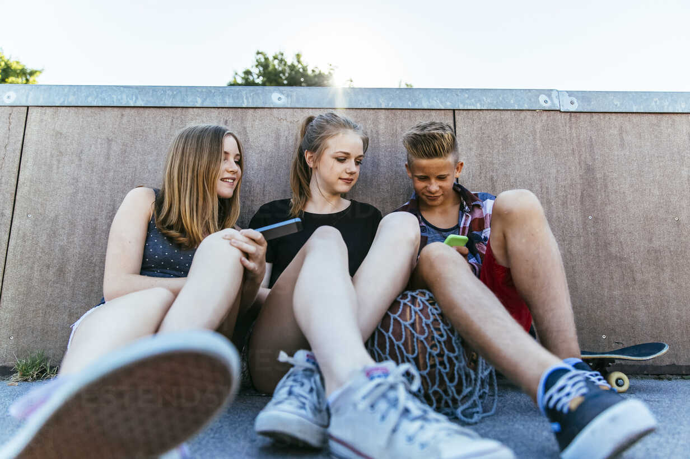
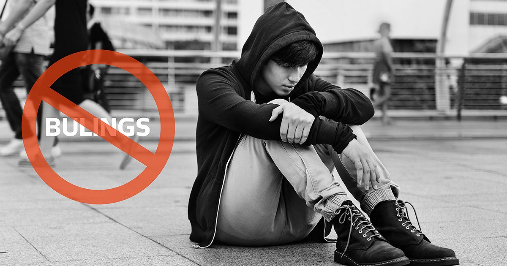

Dzīvesveids, kas ietekmē veselību
Uzturs
Veselīgs, sabalansēts uzturs ir viens no svarīgākajiem labas veselības priekšnoteikumiem. Tomēr daudzi jaunieši:
- ēd maz dārzeņus un augļus;
- bieži izvēlas saldinātus dzērienus un ātro ēdienu;
- neēd regulāras, pilnvērtīgas maltītes.
Šādi paradumi palielina risku aptaukošanās un dažādu slimību attīstībai vēlākā dzīvē (piemēram, sirds un asinsvadu slimības, 2. tipa cukura diabēts).
Fizisko aktivitāšu trūkums

Mūsdienās daudzi jaunieši daudz laika pavada sēdošā pozā – mācoties, pie datora vai viedtālruņa. Pētījumi rāda, ka daļa skolēnu nepavada pietiekami daudz laika fiziskās aktivitātēs un svaigā gaisā.
Pārāk mazkustīgs dzīvesveids var izraisīt:
- sliktāku fizisko sagatavotību;
- sāpes mugurā un locītavās;
- palielinātu stresu un sliktāku miega kvalitāti.
Miegs un ekrāna laiks
Vēls gulētiešanas laiks, daudz ekrāna laika pirms miega un neregulārs dienas režīms pasliktina gan veselību, gan mācību sasniegumus. Daudziem jauniešiem trūkst 8–10 stundas miega, kas nepieciešamas viņu vecumā.
Emocionālā un mentālā veselība

Veselība nozīmē arī to, kā mēs jūtamies iekšēji – mūsu emocijas, domas un spēja tikt galā ar grūtībām.
Jaunieši bieži saskaras ar:
- mācību un eksāmenu stresu;
- attiecību problēmām ar vienaudžiem vai ģimeni;
- bulingu, kibermobingu un sociālo tīklu spiedienu;
- nedrošības sajūtu par nākotni.
Ja šīs problēmas netiek laikus pamanītas un risinātas, tās var novest pie trauksmes, depresijas, motivācijas zuduma un pat paškaitējuma riska.
Sabiedrības un vides ietekme

Mūsu veselību ietekmē arī vide un sabiedrība, kurā dzīvojam.
- Pieejamība – cik viegli ir tikt pie ārsta, psihologa vai uztura speciālista.
- Vide – vai apkārtnē ir droši sportot, pastaigāties, braukt ar velosipēdu.
- Informācija – vai jaunieši saņem uzticamu informāciju par veselību.
- Reklāma – neveselīgu produktu un kaitīgu ieradumu popularizēšana.
Tāpēc veselība un labklājība nav tikai katra paša privāta lieta – tā ir arī sabiedrības un valsts kopīga atbildība.
Kopsavilkums
Mūsdienu jauniešu galvenie izaicinājumi saistīti ar dzīvesveidu (uzturs, kustības, miegs), mentālo veselību un apkārtējo vidi. Nākamajā lapā piedāvāsim konkrētus risinājumus un idejas, kā mēs paši, klase un skola varam rīkoties labākai veselībai un labklājībai.